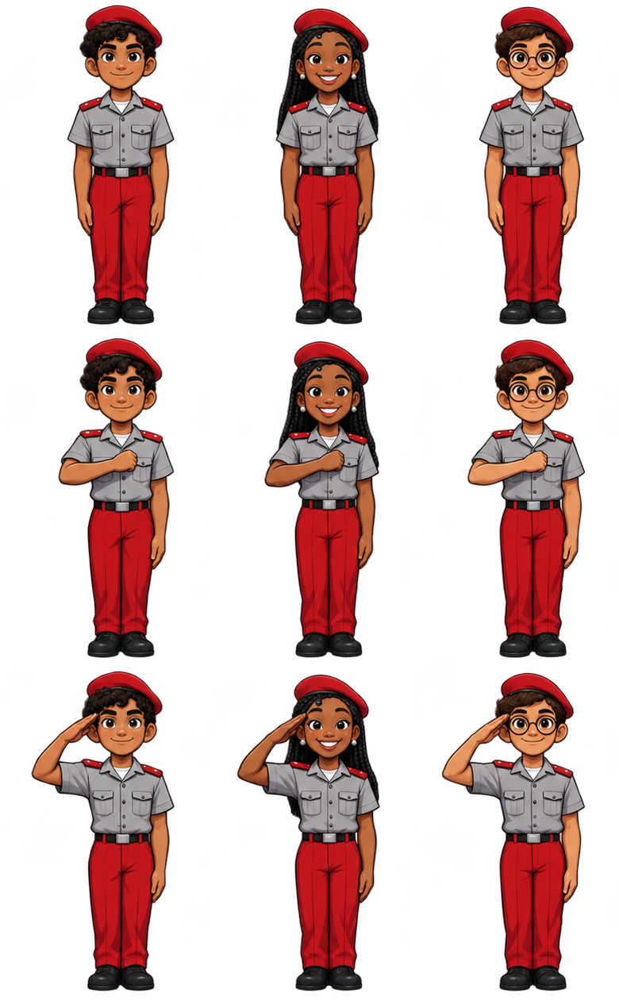

Sua dúvida tem lugar aqui.
Escolha a matéria, escreva ou grave sua pergunta. Acompanhe os sinais: enviando, gerando e material pronto.
SEU ESPAÇO PARA APRENDER · COLÉGIO DOM PEDRO II
Conte o que ficou difícil por voz ou texto. Ouça a explicação real da Profª Naira, estude no ritmo de um app nativo, baixe o PDF e guarde tudo no aparelho.
🎧 Narração completa · 📄 PDF + ZIP offline · 👩🏫 Profª Naira · Voz Clonada Real
COMO FUNCIONA
Você pergunta, o app prepara a aula e você avalia. Simples assim.
Escolha a matéria, escreva ou grave sua pergunta. Acompanhe os sinais: enviando, gerando e material pronto.

A explicação chega com texto, áudio narrado de 5 a 10 minutos e PDF. Use o player para voltar a qualquer ponto.

Dê sua nota, guarde a explicação no aparelho e volte em alguns minutos para revisar. O material passa por revisão da escola.
ASSISTA NO FORMATO REELS · 9:16
Quatro vídeos verticais estilo Instagram Reels narrados pela voz clonada da Profª Naira ao som 16-bit de Soldados do Fogo.
TUDO QUE O APP FAZ
Cada recurso foi pensado para ajudar você a estudar com calma e segurança.
Grave sua pergunta ou escreva. A transcrição acontece no aparelho quando possível.
Voz em português, com player e barra de progresso para voltar a qualquer ponto.
O roteiro completo da aula também vem em PDF e no pacote ZIP com o áudio.
Sua nota ajuda a escola a melhorar. Nota baixa gera uma versão mais simples.
As notícias chegam automaticamente do site oficial do Colégio Dom Pedro II.
Converse com a equipe com identidade protegida. Em risco imediato, há apoio no SOS.
O COLÉGIO
Imagens do campus CZS Sul e dos cadetes que inspiram este app.

NO CELULAR E NO COMPUTADOR
A versão web abre no navegador. No celular, você também pode adicionar o app à tela inicial.
Abra no Safari. Toque em Compartilhar e depois em Adicionar à Tela de Início.
Abrir no iPhone Versão web instalável.Baixe o instalador e abra o arquivo. Se pedir, permita a instalação.
Baixar para Android APK de teste · aproximadamente 17 MB.Use o app direto no navegador, com espaço para ler e acompanhar as explicações.
Abrir versão web Sem instalação.